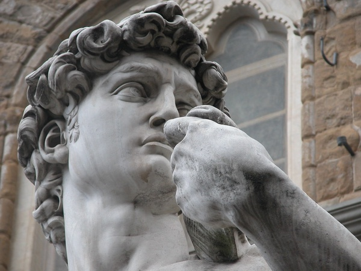
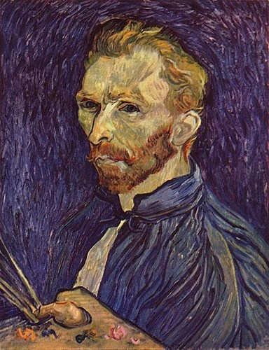
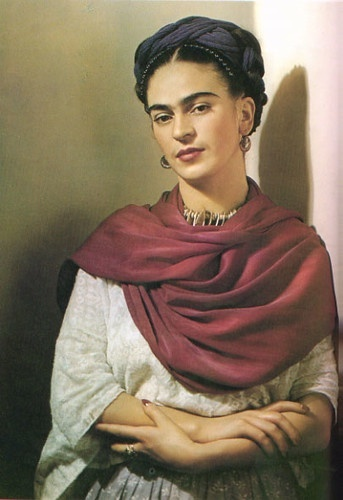

Leonardo Da Vinci was born on April 15th, 1452 and died on May 2nd, 1519. He was an active painter, draughtsman, engineer, scientist, theorist, sculptor and architect. Leonardo is among the greatest painters in the history of art and is often credited as the founder of the High Renaissance. In 2017, one of Leonardo Da Vinci’s paintings sold for 450.3 million dollars, setting a record for the most expensive art sold at a public auction.
Michelangelo di Lodovico Buonarroti Simoni, known simply as Michelangelo, was an Italian sculptor, painter, architect and poet of the High Renaissance. He is most famous for his sculpture, "David". He was born on March 6th, 1475 and died on February 18th, 1564. Throughout his entire life, he had created 182 artworks.
Johannes Vermeer was a Dutch Baroque Period painter who specialized in domestic interior scenes of middle-class life. During his lifetime, he was a moderately successful provincial genre painter, recognized in Delft and The Throughout his life, he created 36 oil paintings and no more than 60 paintings over all.
Rembrandt Harmenszoon van Rijn, usually simply known as Rembrandt, was a Dutch Golden Age painter, printmaker and draughtsman. He is generally considered one of the greatest visual artists in the history of art and the most important in Dutch art history. He was born on July 15th, 1606 and died on October 4th, 1669.
Monet was a French painter and founder of impressionist painting who is seen as a key precursor to modernism. He was born on November 14th, 1840, and died on December 5th, 1926. He created 2,500 artworks throughout his life!
Paul Gauguin was a French Post-Impressionist artist. Gauguin is recognized for his experimental use of color and Synthetist style that were distinct from Impressionism. Toward the end of his life, he spent ten years in French Polynesia. Paul Gaugin was born on June 7th, 1848 and died on May 8th, 1903. Throughout his life, Paul created 516 paintings. One of his paintings, Nafea Faa Ipoipo, is the 4th most expensive painting in the world!
Vincent was a Dutch painter, who became one of the most influential western art figures. He was born on March 30th, 1853, and died on July 29th, 1890. In a decade he made about 2,100 artworks, including around 810 oil paints.
Gustav Klimt was an Austrian symbolist painter and one of the most prominent members of the Vienna Secession movement. Klimt is famous for his paintings, murals, sketches, and other Objects d'art. He was born on July 14th, 1862 and died on February 6th, 1918. Throughout his life, he created 161 paintings.
Edvard Munch was a Norwegian painter. His best known work, The Scream, has become one of the iconic images of world art. He was born on December 12th, 1863 and died on January 23rd, 1944. He created 1789 paintings throughout his lifetime.
Pablo Ruiz Picasso was a Spanish painter, sculptor, printmaker, ceramicist and theatre designer who spent most of his adult life in France. He was born on October 25th, 1881 and died on April 8th, 1973 and In that time, he created 13,500 paintings, and around 100,000 prints and engravings! He is best known for his style of cubism, and most of his paintings have sold for lots of money.
Mark Rothko, born Markus Yakovlevich Rothkowitz and was an American abstract painter of Latvian Jewish descent. He is best known for his color field paintings that depicted irregular and painterly rectangular regions of color. He was born on September 25th, 1903 and died on February 25th, 1970. Throughout his life he created 798 paintings as well as many sketches and drawings. Although his paintings were simple, many of them sold for millions of dollars!
Salvador was a Spanish surrealist artist, he was famous for his technical skill, precise draftsmanship, and the striking and bizarre images in his work. He was born on May 11th, 1904 and died on January 23rd, 1989. Throughout his life, Savador created 1,500 paintings.
Frida was a female Mexican painter, who was known for portraits, self portraits, and works inspired by nature and artifacts of Mexico. She was born on July 6th, 1907 and died on July 13th, 1954. She painted 200 paintings throughout her life.